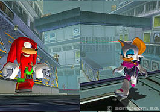
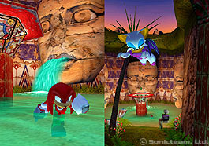
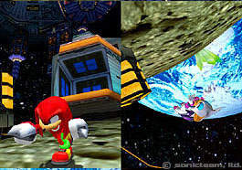
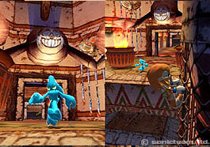

| ソニックアドベンチャー２ バトル | |
| スクリーンショット： トレジャーハンティング | |
 | |
| |« 戻る | レース | シューティング | ハンティング | チャオ | | |
| ３つめの対戦モードは、トレジャーハンティングです。 ステージのどこかに隠された、マスターエメラルドのかけらを探し、先に見つけた方が勝ち。 ヒントやレーダー反応を頼りに、捜索範囲を狭めていきます。 隠される場所は、プレイする度に変化し、そのバリエーションは膨大。何度でも楽しめます。 頭を使ったり、テクニックを駆使したりと、要求されるスキルもいろいろ。必殺技を使っての一発逆転も、熱い対戦を盛り上げます。 | |
|  |  |
| 遺跡・オアシス・金庫室・宇宙など、トレジャーハンティングの舞台はさまざま。 | 相手がどこにいるのかを知ることも、勝利のための大事な要素。 |
|  |  |
| ステージに合わせ、壁登り・滑空など、あらゆるアクションを駆使することが必要。 | それぞれのキャラクターの得意を活かすことが、勝利への近道です。 |
| チャオのスクリーンショットへ » | |
| |
| 本ホームページに掲載する一切の文書･図版･写真等を、手段や形態を問わず複製、転載することを禁じます。 | |
| © Copyright SONIC TEAM, LTD. 2001 All Rights Reserved. | |